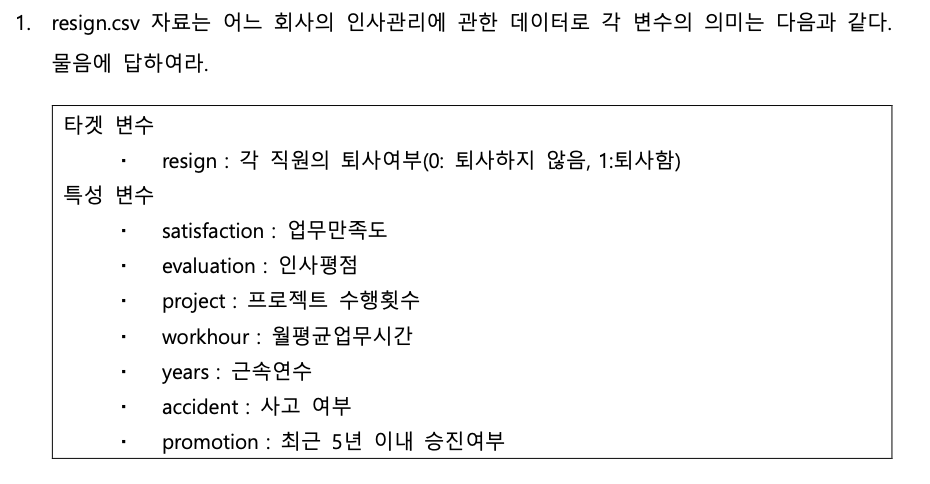
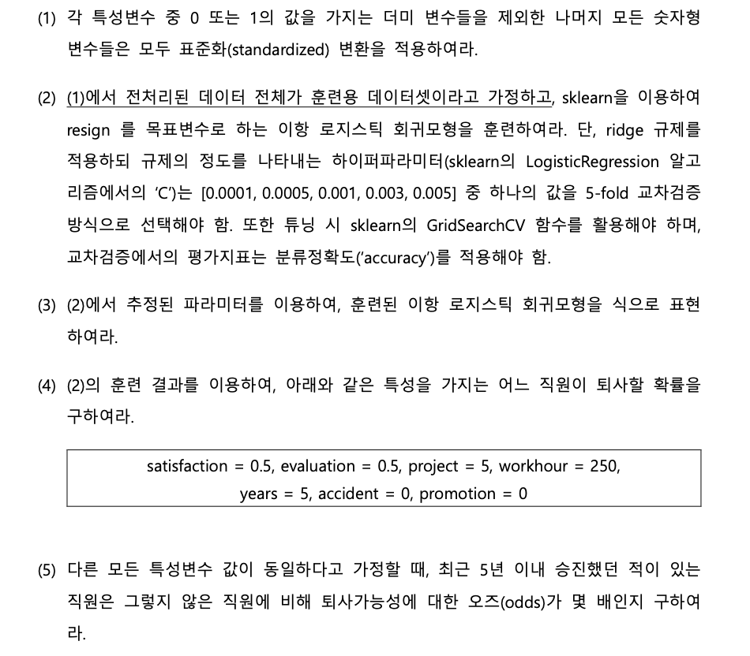
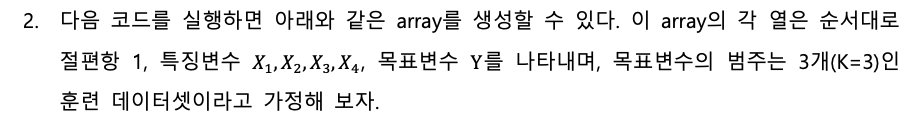
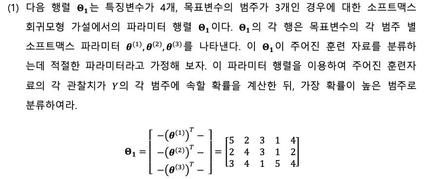
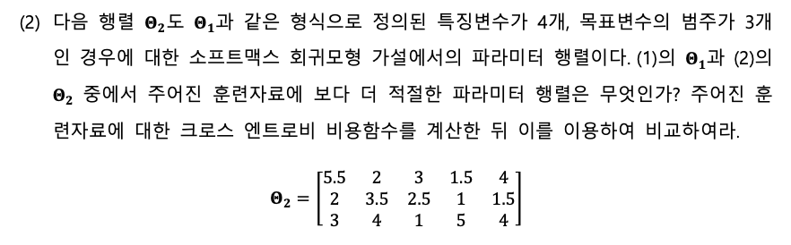

import numpy as np
import pandas as pd
from sklearn.preprocessing import StandardScaler
from sklearn.model_selection import GridSearchCV
from sklearn.linear_model import LogisticRegression
data = pd.read_csv("머신러닝hw2_resign.csv")인공지능 및 기계학습 과제2
20249132 김형환
Question 1


# (1) 더미 변수를 제외한 숫자형 변수 표준화
print('----- Before Standardization -----')
print(pd.DataFrame(pd.concat([data.min(),data.max(),data.mean(),data.std()],axis=1)))
scaler = StandardScaler()
standardization = ['satisfaction', 'evaluation', 'project', 'workhour', 'years']
data[standardization] = scaler.fit_transform(data[standardization])
print('----- After Standardization -----')
print(pd.DataFrame(pd.concat([data.min(),data.max(),data.mean(),data.std()],axis=1)))----- Before Standardization -----
0 1 2 3
satisfaction 0.09 1.0 0.612834 0.248631
evaluation 0.36 1.0 0.716102 0.171169
project 2.00 7.0 3.803054 1.232592
workhour 96.00 310.0 201.050337 49.943099
years 2.00 10.0 3.498233 1.460136
accident 0.00 1.0 0.144610 0.351719
resign 0.00 1.0 0.238083 0.425924
promotion 0.00 1.0 0.021268 0.144281
----- After Standardization -----
0 1 2 3
satisfaction -2.102922 1.557247 2.880259e-16 1.000033
evaluation -2.080478 1.658639 -3.903508e-16 1.000033
project -1.462863 2.593763 5.589976e-17 1.000033
workhour -2.103471 2.181549 -8.716572e-17 1.000033
years -1.026126 4.452998 -6.063702e-17 1.000033
accident 0.000000 1.000000 1.446096e-01 0.351719
resign 0.000000 1.000000 2.380825e-01 0.425924
promotion 0.000000 1.000000 2.126808e-02 0.144281더미변수를 제외한 숫자형 변수를 StandardScaler를 이용하여 표준화했습니다.
# (2) 이항 로지스틱 회귀모형 훈련 (Ridge 규제 적용)
x = data.drop(columns=['resign'])
y = data['resign']
params = {'C': [0.0001, 0.0005, 0.001, 0.003, 0.005]}
model = LogisticRegression(penalty='l2')
gridCV = GridSearchCV(model, params, cv=5, scoring='accuracy')
gridCV.fit(x, y)
print(gridCV.best_estimator_)LogisticRegression(C=0.001)Ridge규제를 적용한 이항 로지스틱 모형을 생성하고, 주어진 모든 데이터를 훈련데이터로 활용하였습니다.
하이퍼파리미터 튜닝을 GridSearchCV로 진행한 결과는 위와 같습니다.
# (3) 최적 파라미터를 이용한 모형 식
best_model = gridCV.best_estimator_
print("Intercept:", best_model.intercept_)
print("Coefficients:", best_model.coef_)Intercept: [-1.25192337]
Coefficients: [[-0.66725713 0.03758406 -0.1368043 0.11213996 0.2043499 -0.24128311
-0.05154287]]이후 최적 하이퍼파라미터로 모델을 훈련한 결과값이며, Intercept는 절편항, 각 coefficients는 파라미터의 계수입니다.
이 항의 선형결합을 변수로 가지는 로지스틱 함수 \(\frac{1}{1+e^{1.25+0.67*sati-0.04*eval-\dotsm +0.05*promot}}\)가 모형의 최종 식이 됩니다.
# (4) 특정 직원의 퇴사 확률 계산
newX_numeric = scaler.transform([[0.5, 0.5, 5, 250, 5]])
newX_dummy = [[0,0]]
newX = np.concatenate([newX_numeric,newX_dummy], axis=1)
predict_Y = best_model.predict_proba(newX)
print("퇴사 확률:", predict_Y[0][1])퇴사 확률: 0.3080382797323505/Users/hwan/.pyenv/versions/hwan/lib/python3.10/site-packages/sklearn/base.py:493: UserWarning:
X does not have valid feature names, but StandardScaler was fitted with feature names
/Users/hwan/.pyenv/versions/hwan/lib/python3.10/site-packages/sklearn/base.py:493: UserWarning:
X does not have valid feature names, but LogisticRegression was fitted with feature names
해당 특성을 가지는 직원의 퇴사 확률은 약 31% 입니다.
# (5) 승진 여부(promotion)에 따른 오즈비 계산
odds = np.exp(best_model.coef_[0][-1])
print("오즈비:", odds)오즈비: 0.9497629280080885승진 여부에 따른 오즈비는, 모형 식에서 쉽게 계산할 수 있으며, 각 변수의 계수에 exponential를 취한 값과 같습니다.
승진 여부에 따른 오즈비는 0.95이며, 최근 5년이내에 승진하는 경우 퇴사할 가능성이 낮아짐을 의미합니다.
Question 2

np.random.seed(123)
traindt = np.hstack([
np.ones((5,1)),
np.around(np.random.randn(5,4), 3),
np.random.randint(1, 4, (5,1)) ])
traindtarray([[ 1. , -1.086, 0.997, 0.283, -1.506, 2. ],
[ 1. , -0.579, 1.651, -2.427, -0.429, 1. ],
[ 1. , 1.266, -0.867, -0.679, -0.095, 1. ],
[ 1. , 1.491, -0.639, -0.444, -0.434, 1. ],
[ 1. , 2.206, 2.187, 1.004, 0.386, 3. ]])
# (1)
data = pd.DataFrame(traindt,columns=['x0','x1','x2','x3','x4','target'])
theta = np.array([[5,2,3,1,4],[2,4,3,1,2],[3,4,1,5,4]])
y = data['target']
x = data.drop(columns='target')
s1 = (x * theta[0,:]).sum(axis=1)
s2 = (x * theta[1,:]).sum(axis=1)
s3 = (x * theta[2,:]).sum(axis=1)
total = np.exp(s1) + np.exp(s2) + np.exp(s3)
p1 = np.exp(s1) / total
p2 = np.exp(s2) / total
p3 = np.exp(s3) / total
result1 = np.concatenate([[p1],[p2],[p3]])
print('--------- Result of theta ---------')
print('Prediction : ',result1.argmax(axis=0)+1)
print('Prob : ', result1.max(axis=0))
print('Real : ', np.array(y))--------- Result of theta ---------
Prediction : [1 1 1 2 3]
Prob : [0.89139444 0.96442872 0.41754961 0.47149401 0.72918736]
Real : [2. 1. 1. 1. 3.]주어진 자료를 x, y로 나누고 theta를 통해 소프트맥스 회귀모형을 계산하였으며,
5개의 훈련자료는 각각 1,1,1,2,3 으로 분류되었습니다.
훈련자료의 실제 범주는 2,1,1,1,3으로 3개는 일치, 2개는 불일치입니다.

# (2)
theta2 = np.array([[5.5,2,3,1.5,4],[2,3.5,2.5,1,1.5],[3,4,1,5,4]])
s1_2 = (x * theta2[0,:]).sum(axis=1)
s2_2 = (x * theta2[1,:]).sum(axis=1)
s3_2 = (x * theta2[2,:]).sum(axis=1)
total_2 = np.exp(s1_2) + np.exp(s2_2) + np.exp(s3_2)
p1_2 = np.exp(s1_2) / total_2
p2_2 = np.exp(s2_2) / total_2
p3_2 = np.exp(s3_2) / total_2
result2 = np.concatenate([[p1_2],[p2_2],[p3_2]])
print('--------- Result of theta2 ---------')
print('Prediction : ', result2.argmax(axis=0)+1)
print('Prob : ', result2.max(axis=0))
print('Real : ', np.array(y))--------- Result of theta2 ---------
Prediction : [1 1 1 2 3]
Prob : [0.87856171 0.94824032 0.47684229 0.39211219 0.72911211]
Real : [2. 1. 1. 1. 3.]동일한 방식으로 평가한 결과 5개의 훈련자료는 각각 1,1,1,2,3 으로 분류되었습니다.
위 파라미터와 동일한 분류 결과를 보였습니다.
from tensorflow.keras.utils import to_categorical
y_matrix = to_categorical( np.array(y)-1 )
cross_entropy1 = -(np.log(result1.T) * y_matrix).sum() / 5
cross_entropy2 = -(np.log(result2.T) * y_matrix).sum() / 5
print(cross_entropy1, cross_entropy2)1.020442594489133 0.9084641929026332이에 따라, 두 파라미터의 성능을 평가하기 위해 크로스-엔트로피 손실함수 값을 비교해보겠습니다.
y는 연산을 위해 매트릭스 형태(one-hot)로 변환한 다음 활용하였습니다.
손실함수의 결과는 \(\mathbb{\Theta}_1\)이 1.02, \(\mathbb{\Theta}_2\)가 0.91입니다.
따라서 두 파라미터 행렬 중 \(\mathbb{\Theta}_2\)의 예측확률이 높아 적절합니다.